คู่มือฉบับเต็ม
รวมวิธีใช้งานทั้งระบบหลัก (Full) ทุกเมนู และ Fast Entry ทุกแท็บ พร้อมคำถามที่พบบ่อย ไว้ในหน้าเดียว
คู่มือการใช้งานระบบ
(อธิบายละเอียดทุกเมนู ทีละฟังก์ชัน)
ระบบบัญชีวัดและ e-Donation "วัดไทยใสใส"
Ver-R2
สำหรับผู้ดูแลระบบ เจ้าหน้าที่บัญชี และผู้ตรวจสอบ
▸ คำนำ
▸ สิทธิ์การใช้งานของแต่ละบทบาท (Role)
▸ เมนูที่ 1 — ภาพรวม & บันทึก
▸ เมนูที่ 2 — พิมพ์รายงานบัญชี
▸ เมนูที่ 3 — ระบบบริจาค (e-Donation)
▸ เมนูที่ 4 — การสอบทาน
▸ เมนูที่ 5 — จัดการผู้ใช้งาน
▸ เมนูที่ 6 — ตั้งค่าระบบ
▸ หน้าเว็บสาธารณะ
▸ คำถามที่พบบ่อยเรื่องการใช้งาน
คู่มือฉบับนี้อธิบายวิธีใช้งานทุกเมนูของระบบบัญชีวัดและ e-Donation "วัดไทยใสใส" อย่างละเอียด ทีละฟังก์ชัน เหมาะสำหรับเจ้าหน้าที่ที่ติดตั้งระบบเสร็จแล้ว (ดูขั้นตอนติดตั้งได้จากคู่มือ "การติดตั้งและตั้งค่าระบบ" เล่มแยกต่างหาก) และต้องการเรียนรู้การใช้งานประจำวัน
ระบบแบ่งเมนูการทำงานออกเป็น 6 เมนูหลัก โดยบางเมนูจะมองเห็นแตกต่างกันไปตามสิทธิ์ (Role) ของผู้ใช้งานแต่ละคน — ก่อนอ่านรายละเอียดแต่ละเมนู แนะนำให้ทำความเข้าใจตารางสิทธิ์ในหน้าถัดไปก่อน เพื่อให้ทราบว่าตนเองมีสิทธิ์ทำอะไรได้บ้าง
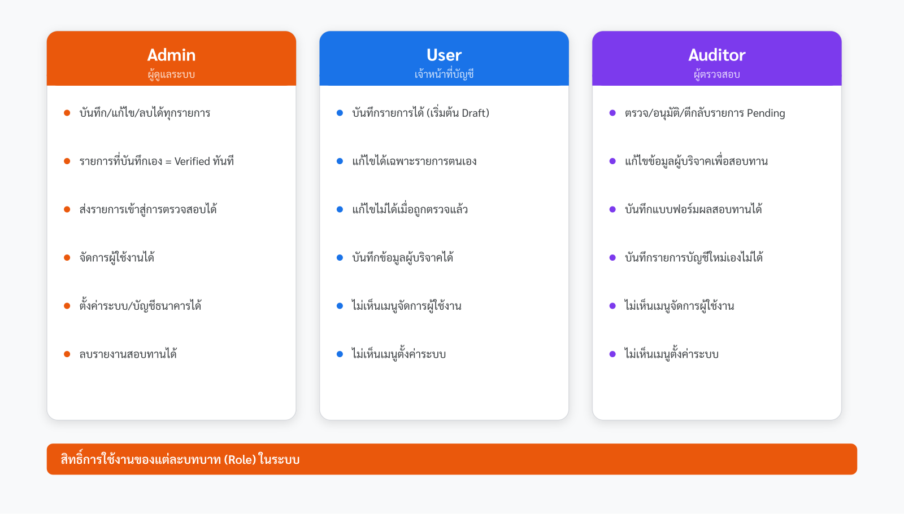
หลักการสำคัญที่ควรจำ: รายการบัญชีที่ผ่านการตรวจสอบแล้ว (สถานะ Audited) จะถูก "ล็อก" ไม่ให้ User ทั่วไปแก้ไขหรือลบได้อีก เพื่อรักษาความถูกต้องของข้อมูลที่ผ่านการรับรองแล้ว มีเพียง Admin เท่านั้นที่แก้ไขรายการสถานะนี้ได้ในกรณีจำเป็นจริงๆ
ใช้ได้โดย: Admin User Auditor
เมนูแรกที่ทุกคนเห็นหลังเข้าสู่ระบบ เป็นทั้งหน้าสรุปภาพรวมและหน้าบันทึกรายการบัญชีประจำวัน
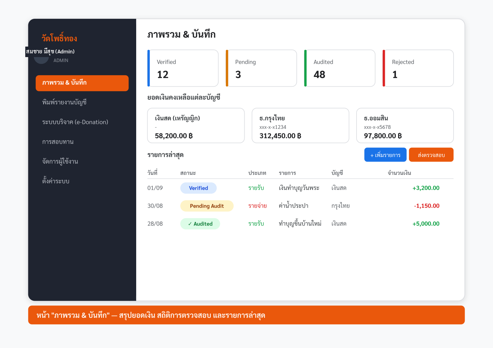
▸ การ์ด Verified / Pending / Audited / Rejected — จำนวนรายการในแต่ละสถานะของเดือนที่กำลังดูอยู่ ช่วยให้เห็นภาพรวมงานค้างได้ทันที
▸ การ์ดยอดเงินคงเหลือแต่ละบัญชี — แสดงยอดเงินสดและเงินฝากธนาคารทุกบัญชี คำนวณจากผลรวมรายรับ-รายจ่ายที่ยังไม่ถูก "ตีกลับ" ทั้งหมดจนถึงปัจจุบัน อัปเดตอัตโนมัติทุกครั้งที่มีการบันทึกรายการใหม่
▸ ตัวเลือกเดือน (มุมบนของหน้า) — เปลี่ยนเดือนเพื่อดูรายการย้อนหลัง หรือดูเดือนถัดไปที่ยังไม่มีรายการ
เปิดฟอร์มบันทึกรายการบัญชีใหม่ ซึ่งมี 2 โหมดให้เลือก คือ "ปกติ" (รายรับ-รายจ่ายทั่วไป) และ "โอนเงิน/ฝาก-ถอน" (ย้ายเงินระหว่างบัญชีของวัดเอง)
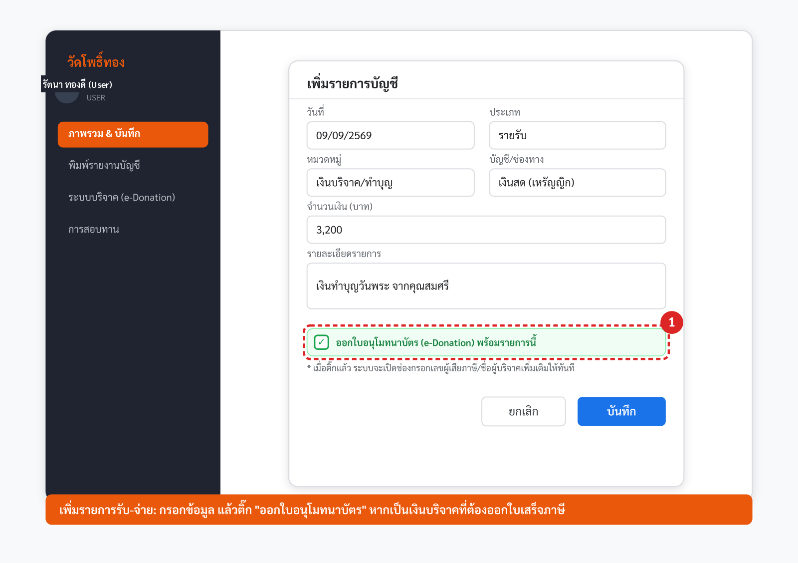
▸ วันที่ / ประเภท (รายรับ-รายจ่าย) — ระบุวันที่เกิดรายการจริง และเลือกว่าเป็นเงินเข้า (รายรับ) หรือเงินออก (รายจ่าย)
▸ หมวดหมู่ — จัดกลุ่มรายการ เช่น เงินบริจาค/ทำบุญ, ค่าสาธารณูปโภค — ใช้ในการจัดทำรายงานแยกประเภทภายหลัง (แก้ไข/เพิ่มหมวดหมู่ได้จากฐานข้อมูล Categories)
▸ บัญชี/ช่องทาง — เลือกว่าเงินนี้เข้า-ออกจากบัญชีเงินสดหรือบัญชีธนาคารใด (ต้องตั้งค่าบัญชีไว้ล่วงหน้าที่เมนู "ตั้งค่าระบบ")
▸ จำนวนเงิน / รายละเอียดรายการ — ระบุยอดเงินและคำอธิบายสั้นๆ ที่จะปรากฏในตารางรายการและรายงาน
▸ เลขที่ใบเสร็จ/ใบสำคัญ — ไม่บังคับ แต่แนะนำให้กรอกเพื่อให้อ้างอิงกับเอกสารตัวจริงได้ง่ายเวลาสอบทาน
▸ ☑ นำส่งข้อมูลเข้าระบบ e-Donation — ติ๊กเมื่อรายรับนี้เป็นเงินบริจาคที่ผู้บริจาคต้องการใบเสร็จรับเงินสำหรับลดหย่อนภาษี ระบบจะเปิดช่องกรอกเลขประจำตัวผู้เสียภาษี/ชื่อผู้บริจาคเพิ่มเติม และบันทึกข้อมูลนี้ลงเมนู "ระบบบริจาค" ให้อัตโนมัติในคราวเดียวกัน
เลขประจำตัวผู้เสียภาษีต้องเป็นตัวเลข 13 หลักเท่านั้น ระบบจะไม่ยอมบันทึกถ้าใส่ไม่ครบหรือมีตัวอักษรปน
ใช้เมื่อย้ายเงินระหว่างบัญชีของวัดเอง เช่น นำเงินสดไปฝากธนาคาร ไม่ใช่รายรับ-รายจ่ายจริงจากภายนอก
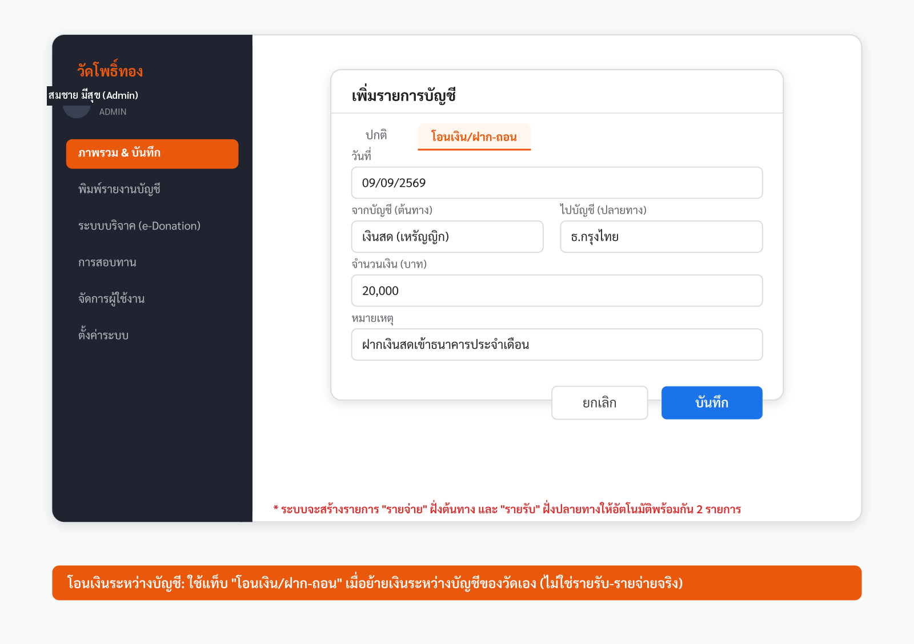
เมื่อบันทึกรายการโอนเงิน ระบบจะสร้างรายการ 2 รายการพร้อมกันโดยอัตโนมัติ คือ "รายจ่าย" ที่บัญชีต้นทาง และ "รายรับ" ที่บัญชีปลายทาง เพื่อให้ยอดเงินคงเหลือของทั้ง 2 บัญชีถูกต้องตรงกันเสมอ
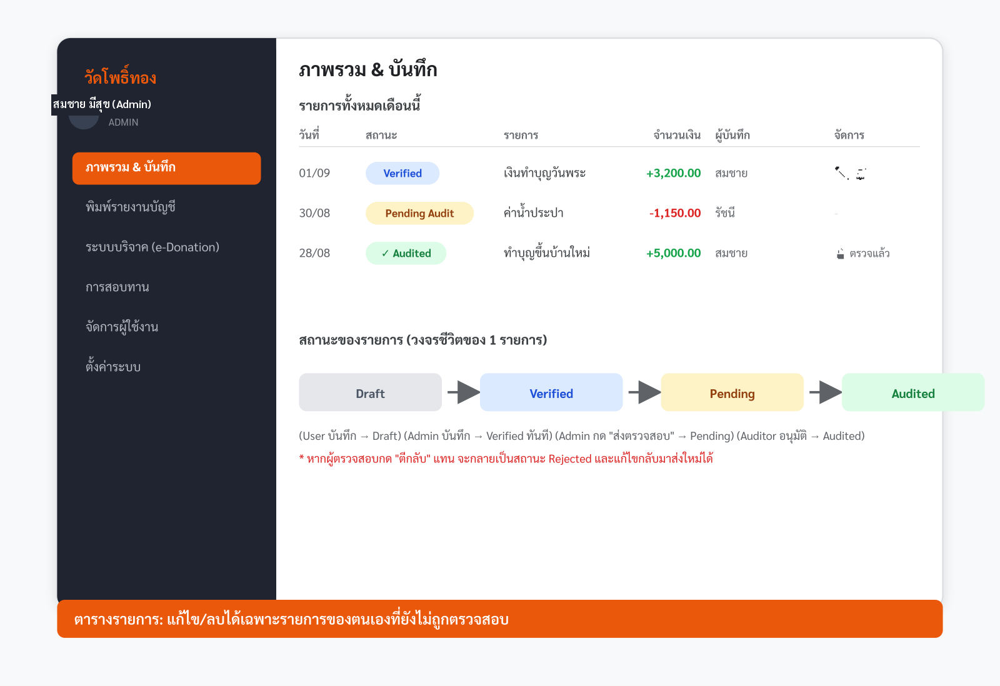
รายการบัญชีทุกรายการจะมีสถานะกำกับไว้เสมอ ไล่ตามลำดับขั้นดังนี้:
▸ ปุ่ม "ส่งตรวจสอบ" (เฉพาะ Admin) — รวบรวมรายการสถานะ Draft และ Verified ทั้งหมดของเดือนที่เลือก เปลี่ยนเป็น Pending เพื่อส่งให้ Auditor ตรวจ — ควรทำหลังจากบันทึกรายการของเดือนนั้นครบถ้วนแล้ว
▸ ไอคอนแก้ไข/ลบ (✏️/🗑️) — ปรากฏเฉพาะที่รายการซึ่งผู้ใช้ปัจจุบันมีสิทธิ์แก้ไขเท่านั้น (เจ้าของรายการ หรือ Admin) และเฉพาะรายการที่ยังไม่ถูก Audited
ใช้ได้โดย: Admin User Auditor
ใช้สร้างรายงานบัญชีตามแบบฟอร์มมาตรฐาน สำหรับเก็บเป็นหลักฐาน นำเสนอกรรมการวัด หรือส่งหน่วยงานที่เกี่ยวข้อง
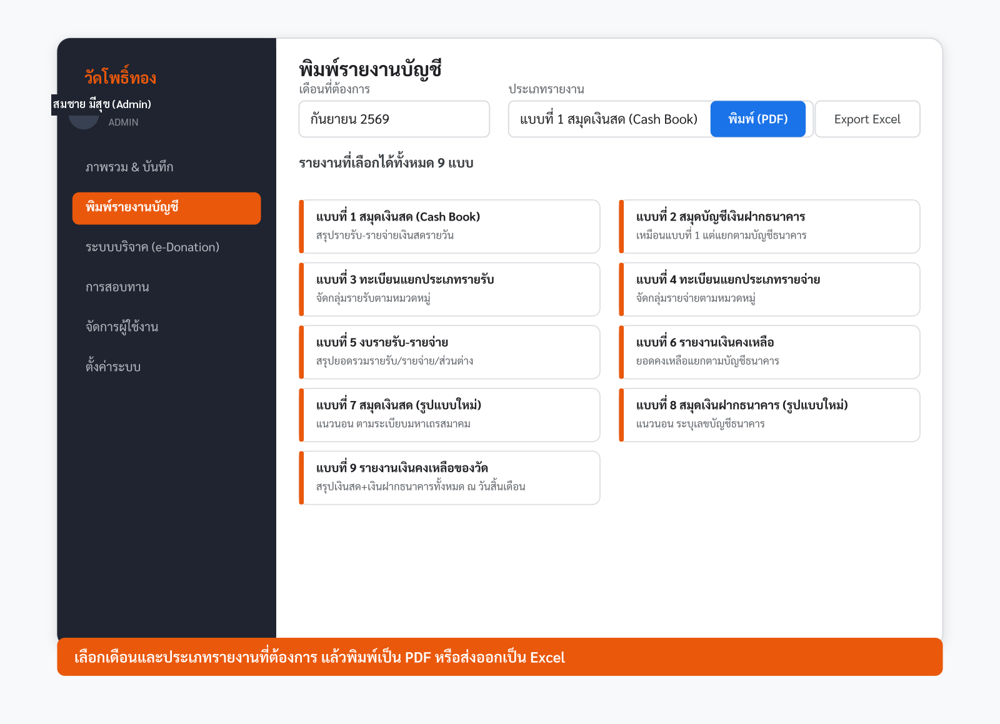
เลือกเดือนและประเภทรายงานที่ต้องการจากทั้งหมด 9 แบบ ครอบคลุมทั้งรูปแบบดั้งเดิมและรูปแบบตามระเบียบมหาเถรสมาคมฉบับปรับปรุง:
▸ แบบที่ 1–2 / 7–8 (สมุดเงินสด และสมุดเงินฝากธนาคาร) — รายการรับ-จ่ายเรียงตามวันที่ พร้อมยอดคงเหลือสะสม เหมาะสำหรับตรวจสอบรายวัน
▸ แบบที่ 3–4 (ทะเบียนแยกประเภท) — จัดกลุ่มรายการตามหมวดหมู่ เห็นภาพว่าใช้จ่ายหรือมีรายรับด้านใดมากที่สุด
▸ แบบที่ 5 (งบรายรับ-รายจ่าย) — สรุปยอดรวมแบบสั้น เหมาะสำหรับนำเสนอในที่ประชุม
▸ แบบที่ 6 / 9 (รายงานเงินคงเหลือ) — สรุปยอดเงินคงเหลือของทุกบัญชี ณ วันสิ้นเดือน
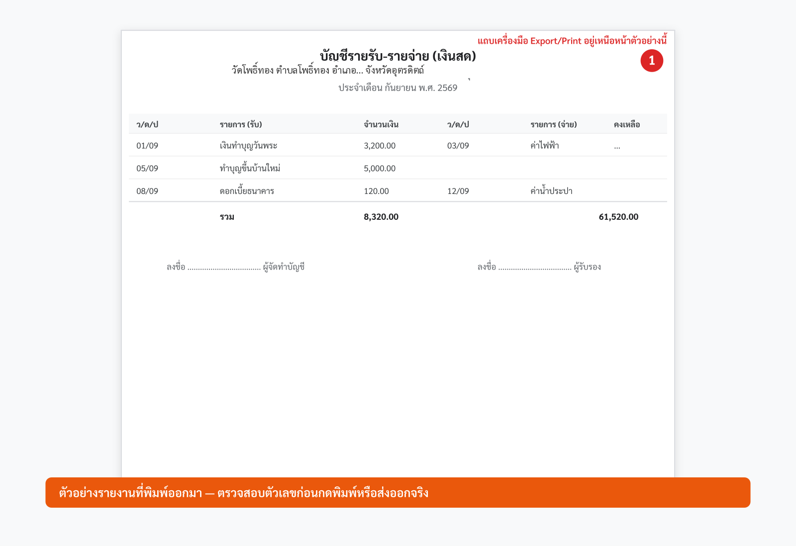
ระบบจะแสดงตัวอย่างรายงานในกระดาษเปล่าเสมือนจริง มีปุ่มด้านบน 2 ปุ่ม:
▸ พิมพ์ (PDF) — เปิดหน้าต่างพิมพ์ของเบราว์เซอร์ ให้เลือกพิมพ์ออกกระดาษจริงหรือบันทึกเป็นไฟล์ PDF
▸ Export Excel — ดาวน์โหลดข้อมูลรายงานเป็นไฟล์ Excel (.xlsx) เพื่อนำไปประมวลผลหรือแก้ไขต่อ
ควรตรวจสอบว่ารายการทั้งหมดของเดือนนั้นถูกบันทึกครบและมีสถานะที่ถูกต้องก่อนพิมพ์รายงานจริง เพราะรายงานจะดึงเฉพาะรายการที่ไม่ได้ถูก "ตีกลับ" (Rejected) มาแสดงเท่านั้น
ใช้ได้โดย: Admin User Auditor
รวบรวมรายชื่อผู้บริจาคที่ต้องการใบอนุโมทนาบัตรสำหรับลดหย่อนภาษี และจัดทำไฟล์นำส่งกรมสรรพากรตามรูปแบบที่กำหนด
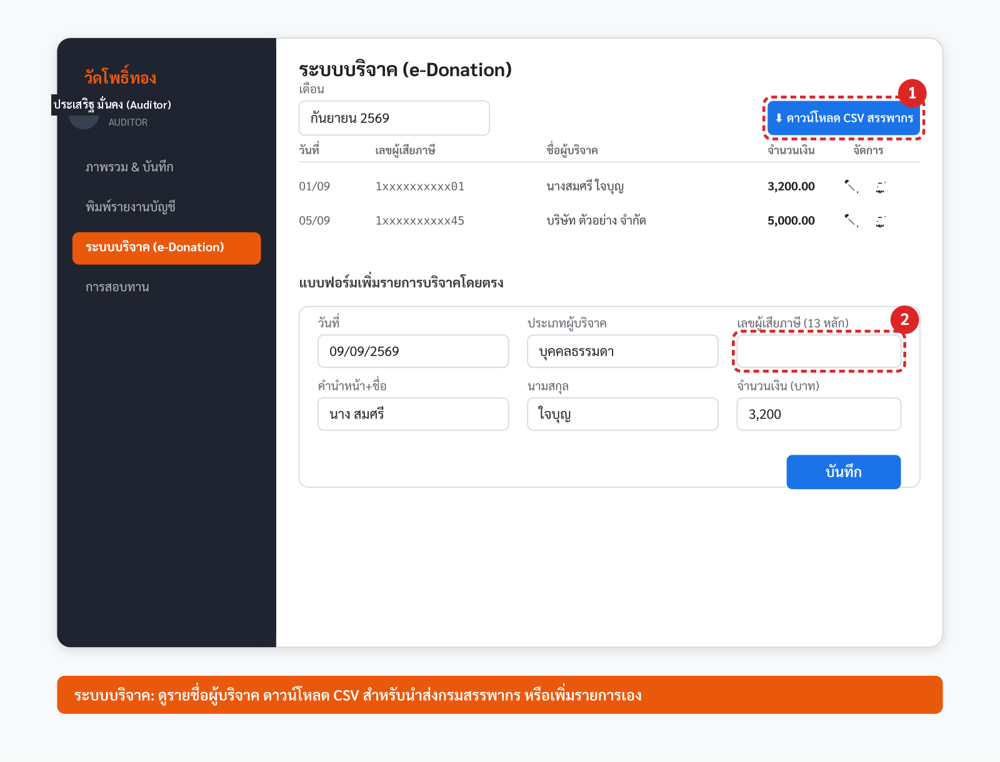
รายชื่อผู้บริจาคจะถูกเพิ่มเข้ามาได้ 2 ทาง คือ (1) ติ๊ก "ขออนุโมทนาบัตร (นำส่งข้อมูลเข้าระบบ e-Donation)" ตอนบันทึกรายการรับเงินที่หน้า Dashboard ตามที่อธิบายในเมนูที่ 1 หรือ (2) กรอกผ่านแบบฟอร์มด้านล่างของหน้านี้โดยตรง สำหรับกรณีที่ไม่ต้องการผูกกับรายการบัญชีใดเป็นการเฉพาะ
▸ ปุ่ม "ดาวน์โหลด CSV สรรพากร" — สร้างไฟล์ CSV ตามรูปแบบไฟล์นำส่งข้อมูลผู้บริจาคของกรมสรรพากร (inputDonatefile) สำหรับเดือนที่เลือก พร้อมอัปโหลดเข้าระบบ e-Donation ของกรมสรรพากรได้ทันที
▸ ประเภทผู้บริจาค — เลือก "บุคคลธรรมดา" (กรอกคำนำหน้า+ชื่อ+นามสกุล) หรือ "นิติบุคคล" (กรอกชื่อบริษัท)
▸ เลขประจำตัวผู้เสียภาษี (13 หลัก) — บังคับกรอกเสมอ ต้องเป็นตัวเลขล้วน 13 หลัก ไม่เช่นนั้นระบบจะไม่บันทึกให้
▸ ไอคอนแก้ไข (✏️) — แก้ไขข้อมูลผู้บริจาคที่มีอยู่แล้วได้ — ปุ่มนี้แสดงเฉพาะ Auditor เท่านั้น (เพื่อให้แก้ไข/สอบทานความถูกต้องของข้อมูลก่อนนำส่งจริง) ส่วน Admin/User บันทึกใหม่ได้แต่แก้ไขรายการเดิมจากตารางนี้ไม่ได้
เลขประจำตัวผู้เสียภาษีและชื่อ-นามสกุลต้องสะกดให้ตรงกับบัตรประชาชนเป๊ะๆ เพราะข้อมูลนี้จะถูกนำไปออกใบกำกับภาษีที่มีผลทางกฎหมาย ผิดพลาดแล้วแก้ไขย้อนหลังยุ่งยาก
ใช้ได้โดย: Auditor Admin
เมนูสำหรับผู้ตรวจสอบ (Auditor) ใช้ตรวจทานความถูกต้องของรายการบัญชีที่เจ้าหน้าที่ส่งเข้ามา และจัดทำรายงานผลการสอบทานประจำงวดอย่างเป็นทางการ
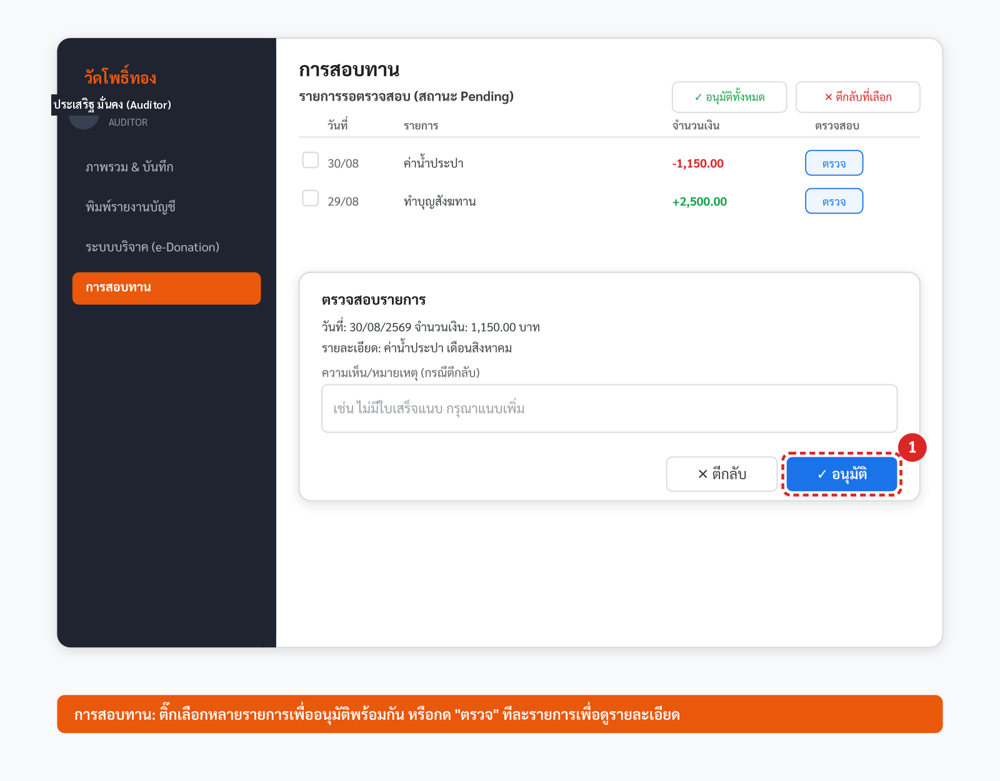
▸ กล่องติ๊กเลือก + ปุ่ม "อนุมัติทั้งหมด" / "ตีกลับที่เลือก" — ติ๊กเลือกหลายรายการพร้อมกันแล้วดำเนินการเป็นชุดได้ ประหยัดเวลาเมื่อมีรายการจำนวนมากที่ไม่มีปัญหา
▸ ปุ่ม "ตรวจ" รายรายการ — เปิดหน้าต่างรายละเอียดของรายการนั้น ให้ตรวจสอบทีละรายการอย่างละเอียด พร้อมช่องใส่ความเห็น
▸ ✓ อนุมัติ — เปลี่ยนสถานะรายการเป็น Audited ถือว่าผ่านการตรวจสอบและปิดงวดแล้ว
▸ ✕ ตีกลับ — เปลี่ยนสถานะเป็น Rejected พร้อมบันทึกความเห็น/เหตุผล ซึ่งจะไปแสดงเป็น "หมายเหตุตีกลับ" ให้เจ้าของรายการเห็นที่หน้า Dashboard เพื่อแก้ไขและส่งใหม่
นอกจากตรวจทีละรายการ ผู้ตรวจสอบยังต้องจัดทำ "รายงานผลการสอบทานการเงินและบัญชี" ฉบับทางการสรุปภาพรวมทั้งงวดด้วย
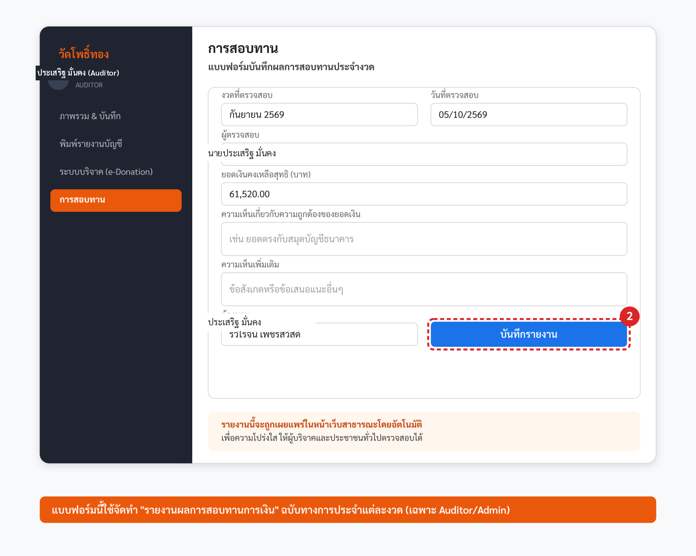
▸ งวดที่ตรวจสอบ / วันที่ตรวจสอบ / ผู้ตรวจสอบ — ข้อมูลอ้างอิงของรายงานฉบับนี้
▸ ยอดเงินคงเหลือสุทธิ — กรอกยอดที่ตรวจนับ/กระทบยอดกับสมุดบัญชีธนาคารจริงแล้ว
▸ ความเห็นเกี่ยวกับความถูกต้องของยอดเงิน / ความเห็นเพิ่มเติม — บันทึกข้อสังเกต ข้อเสนอแนะ หรือระบุว่า "ไม่พบข้อผิดพลาด" หากตรวจแล้วถูกต้อง
▸ ปุ่ม "บันทึกรายงาน" — บันทึกและเผยแพร่รายงานฉบับนี้
รายงานที่บันทึกแล้วจะถูกเผยแพร่ในหน้าเว็บสาธารณะโดยอัตโนมัติทันที เพื่อความโปร่งใสให้ผู้บริจาคและประชาชนทั่วไปเข้าดูได้ — ควรตรวจทานความถูกต้องให้รอบคอบก่อนกดบันทึก
ใช้ได้โดย: Admin
เมนูนี้มองเห็นเฉพาะบัญชี Admin เท่านั้น ใช้เพิ่ม แก้ไข และลบบัญชีผู้ใช้งานของเจ้าหน้าที่วัดทุกคน
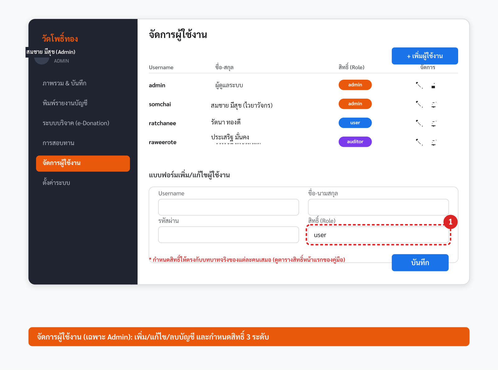
▸ ตารางรายชื่อผู้ใช้งาน — แสดง Username, ชื่อ-สกุล และสิทธิ์ (Role) ของทุกบัญชีในระบบ
▸ ปุ่ม "+ เพิ่มผู้ใช้งาน" — เปิดฟอร์มว่างสำหรับสร้างบัญชีใหม่
▸ ไอคอนดินสอ (✏️) — แก้ไขชื่อ-สกุล, สิทธิ์, หรือรีเซ็ตรหัสผ่านของบัญชีนั้น (เว้นช่องรหัสผ่านว่างไว้ = ไม่เปลี่ยนรหัสผ่านเดิม)
▸ ไอคอนถังขยะ (🗑️) — ลบบัญชีถาวร — บัญชี admin หลัก (บัญชีแรกสุดของระบบ) และบัญชีที่กำลังใช้งานเข้าสู่ระบบอยู่ ณ ขณะนั้น จะลบตัวเองไม่ได้ เพื่อป้องกันการล็อกตัวเองออกจากระบบโดยไม่ตั้งใจ
▸ ช่อง สิทธิ์ (Role) — เลือกได้ 3 ค่า คือ admin / user / auditor — ดูความหมายของแต่ละสิทธิ์ได้จากตารางในหน้าคำนำ
ตั้งรหัสผ่านให้คาดเดายาก (ตัวพิมพ์ใหญ่-เล็กปน ตัวเลข สัญลักษณ์ อย่างน้อย 10 ตัวอักษร) ทุกครั้งที่สร้างบัญชีใหม่ และแจ้งให้เจ้าของบัญชีเปลี่ยนรหัสผ่านเองอีกครั้งหลังใช้งานครั้งแรก
ใช้ได้โดย: Admin
เมนูนี้มองเห็นเฉพาะบัญชี Admin เท่านั้น รวมการตั้งค่าพื้นฐานของระบบไว้ 3 ส่วน
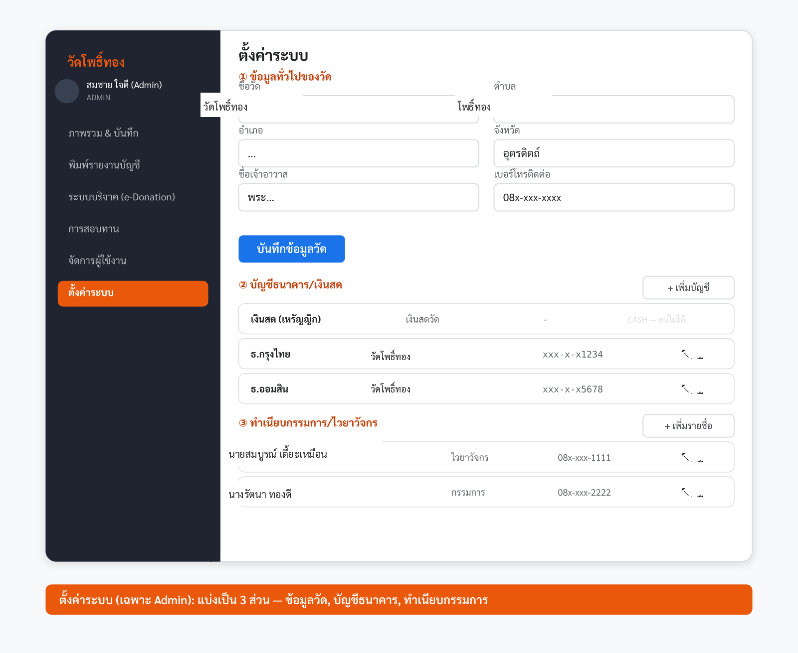
ชื่อวัด ตำบล อำเภอ จังหวัด ชื่อเจ้าอาวาส และเบอร์โทรติดต่อ — ข้อมูลชุดนี้ถูกนำไปแสดงในหัวกระดาษของรายงานบัญชีทุกฉบับ และหน้าเว็บสาธารณะ ควรกรอกให้ครบและถูกต้องตั้งแต่เริ่มใช้งาน
รายการบัญชีที่ใช้รับ-จ่ายเงินของวัด ต้องเพิ่มไว้ในนี้ก่อนจึงจะเลือกใช้ในหน้าบันทึกรายการบัญชีได้ ระบบมีบัญชี "เงินสด (เหรัญญิก)" (CASH) เป็นค่าเริ่มต้นที่ลบไม่ได้ เพิ่มบัญชีธนาคารอื่นๆ ได้ตามจริงผ่านปุ่ม "+ เพิ่มบัญชี"
▸ ชื่อธนาคาร / ชื่อบัญชี / สาขา / เลขที่บัญชี — ข้อมูลอ้างอิงที่จะแสดงในรายงานประเภท "สมุดเงินฝากธนาคาร"
รายชื่อคณะกรรมการวัดหรือไวยาวัจกร ใช้อ้างอิงในเอกสารทางการต่างๆ ของวัด (ไม่เกี่ยวกับบัญชีผู้ใช้งานเข้าสู่ระบบ ซึ่งจัดการแยกที่เมนู "จัดการผู้ใช้งาน")
ใช้ได้โดย:
หน้าแรกที่ทุกคนเห็นเมื่อเปิด URL เว็บแอปขึ้นมา โดยไม่ต้องเข้าสู่ระบบ ออกแบบมาเพื่อความโปร่งใสทางการเงินของวัด
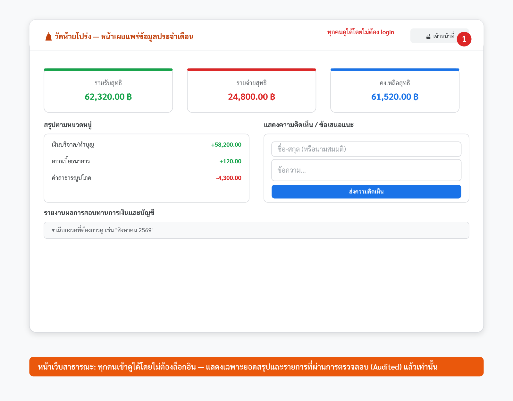
▸ การ์ดสรุปยอด — แสดงรายรับสุทธิ รายจ่ายสุทธิ และคงเหลือสุทธิของเดือนที่เลือก คำนวณจากรายการที่มีสถานะ Audited เท่านั้น (ยังไม่รวมรายการที่ยังไม่ผ่านการตรวจสอบ)
▸ สรุปตามหมวดหมู่ — ยอดรวมของแต่ละหมวดหมู่ (เฉพาะรายการ Audited) ให้ประชาชนเห็นภาพว่าเงินบริจาคถูกใช้จ่ายไปในด้านใดบ้าง
▸ แสดงความคิดเห็น/ข้อเสนอแนะ — ช่องทางให้ผู้บริจาคหรือประชาชนทั่วไปฝากข้อความถึงทางวัดได้โดยตรง ไม่ต้องเข้าสู่ระบบ
▸ รายงานผลการสอบทานการเงินและบัญชี — เลือกงวดที่ต้องการ เพื่อดูรายงานฉบับทางการที่ผู้ตรวจสอบบันทึกไว้ (ตามที่อธิบายในเมนูที่ 4)
▸ ปุ่ม "เจ้าหน้าที่" มุมขวาบน — ทางเข้าสู่ระบบสำหรับเจ้าหน้าที่วัด (Admin/User/Auditor) — เป็นจุดเดียวที่แยกหน้าสาธารณะออกจากระบบจัดการภายใน
หน้านี้เปิดให้ทุกคนเข้าถึงได้เสมอโดยไม่ต้องล็อกอิน จึงไม่แสดงข้อมูลอ่อนไหวใดๆ (ไม่มีเลขบัตรประชาชนผู้บริจาค ไม่มีชื่อเจ้าหน้าที่ผู้บันทึก และไม่แสดงรายการที่ยังไม่ผ่านการตรวจสอบ)
ถาม: บันทึกรายการผิด (เช่น จำนวนเงินผิด) แต่รายการถูกตรวจสอบ (Audited) ไปแล้ว แก้ไขอย่างไร?
ตอบ: รายการที่ Audited แล้วจะถูกล็อกไม่ให้ User ทั่วไปแก้ไข ต้องให้ Admin เป็นผู้แก้ไขเท่านั้น เพราะ Admin มีสิทธิ์แก้ไขรายการได้ทุกสถานะ
หากไม่มีสิทธิ์ Admin ให้ประสานผู้ดูแลระบบของวัดเพื่อขอแก้ไขให้
ถาม: ทำไมยอดเงินคงเหลือที่หน้า Dashboard กับยอดในรายงานที่พิมพ์ออกมาไม่ตรงกัน?
ตอบ: ยอดที่หน้า Dashboard นับรวมทุกรายการที่ไม่ถูกตีกลับ (รวม Draft/Verified/Pending/Audited) แต่บางรายงาน (เช่น แบบที่ 9) อาจคำนวณเฉพาะรายการที่บันทึกครบถ้วนถึงวันที่ระบุเท่านั้น
แนะนำให้ตรวจสอบว่าบันทึกรายการของเดือนนั้นครบถ้วนแล้วหรือยังก่อนเปรียบเทียบตัวเลข
ถาม: ติ๊ก "ขออนุโมทนาบัตร (นำส่งข้อมูลเข้าระบบ e-Donation)" ตอนบันทึกรายการไปแล้ว แต่อยากแก้ไขข้อมูลผู้บริจาคภายหลัง ทำอย่างไร?
ตอบ: ไปที่เมนู "ระบบบริจาค (e-Donation)" แล้วใช้บัญชี Auditor เข้าแก้ไขรายการนั้นในตาราง (เฉพาะ Auditor เท่านั้นที่แก้ไขรายการ e-Donation ที่มีอยู่แล้วได้จากหน้านี้)
ถาม: ลบหมวดหมู่หรือบัญชีธนาคารที่มีรายการผูกอยู่แล้วได้ไหม?
ตอบ: บัญชีธนาคารลบได้จากเมนูตั้งค่าระบบ แต่ควรตรวจสอบก่อนว่าไม่มีรายการที่ยังใช้งานอยู่กับบัญชีนั้น เพราะการลบจะไม่ลบรายการบัญชีเก่าที่เคยผูกไว้ แต่จะทำให้แสดงผลไม่สมบูรณ์ในรายงานบางประเภท
บัญชีเงินสด (CASH) เป็นบัญชีหลักของระบบ ลบไม่ได้
ถาม: ผู้บริจาคขอใบอนุโมทนาบัตรภายหลัง หลังจากที่บันทึกรายการรับเงินไปแล้วโดยไม่ได้ติ๊กไว้ตอนแรก ทำอย่างไร?
ตอบ: ไม่ต้องแก้ไขรายการบัญชีเดิม ให้ไปที่เมนู "ระบบบริจาค (e-Donation)" แล้วกรอกแบบฟอร์มเพิ่มรายการบริจาคโดยตรงแยกต่างหากได้เลย
คู่มือการใช้งาน Fast Entry
(อธิบายทุกแท็บ พร้อมใช้งานทันที)
ระบบบัญชีวัดและ e-Donation "วัดไทยใสใส"
Fast Entry Ver-1
▸ คำนำ
▸ Fast Entry เทียบกับระบบหลัก ทำอะไรได้บ้าง
▸ เมนูที่ 1 — เข้าสู่ระบบ
▸ เมนูที่ 2 — บันทึกรับ-จ่าย & e-Do
▸ เมนูที่ 3 — ระบบสอบทานบัญชี
▸ เมนูที่ 4 — จัดการผู้ใช้
▸ คำถามที่พบบ่อย
คู่มือฉบับนี้อธิบายวิธีใช้งาน Fast Entry ซึ่งเป็นเว็บแอปฉบับเร็วสำหรับมือถือ แยกออกจากคู่มือการใช้งานระบบหลัก เหมาะสำหรับเจ้าหน้าที่บัญชีที่ต้องการบันทึกรายการระหว่างวันผ่านโทรศัพท์โดยไม่ต้องเปิดคอมพิวเตอร์
Fast Entry มีเพียง 3 แท็บเท่านั้น (ตัดเมนูที่ไม่จำเป็นสำหรับงานด่วนออกไป) ใช้บัญชีผู้ใช้งานและฐานข้อมูลชุดเดียวกับระบบหลักทั้งหมด
ตารางนี้ช่วยให้ตัดสินใจได้เร็วว่างานที่กำลังจะทำ ควรเปิดเครื่องมือไหน:
ความสามารถ | Fast Entry | ระบบหลัก |
|---|---|---|
บันทึกรายรับ-รายจ่าย | ได้ | ได้ |
นำส่งข้อมูลเข้าระบบ e-Donation | ได้ | ได้ |
โอนเงิน/ฝาก/ถอนระหว่างบัญชี | ได้ | ได้ |
ดูประวัติรายการล่าสุด | ได้ (100 รายการ) | ได้ (ทั้งหมด) |
อนุมัติ/ตีกลับรายการ (สอบทาน) | ไม่ได้ | ได้ |
บันทึกรายงานสอบทานใหม่ | ไม่ได้ | ได้ |
พิมพ์รายงานบัญชี 9 แบบ | ไม่ได้ | ได้ |
ดาวน์โหลด CSV สรรพากร | ไม่ได้ | ได้ |
เพิ่ม/แก้ไขผู้ใช้งาน | ไม่ได้ | ได้ |
ลบผู้ใช้งาน | ได้ (admin) | ได้ (admin) |
ตั้งค่าระบบ/บัญชีธนาคาร | ไม่ได้ | ได้ |
หน้าเว็บสาธารณะ | ไม่ได้ | ได้ |
หน้าแรกที่เห็นเมื่อเปิด Fast Entry ใช้ Username/Password ชุดเดียวกับระบบหลักได้ทันที ไม่ต้องสมัครสมาชิกใหม่
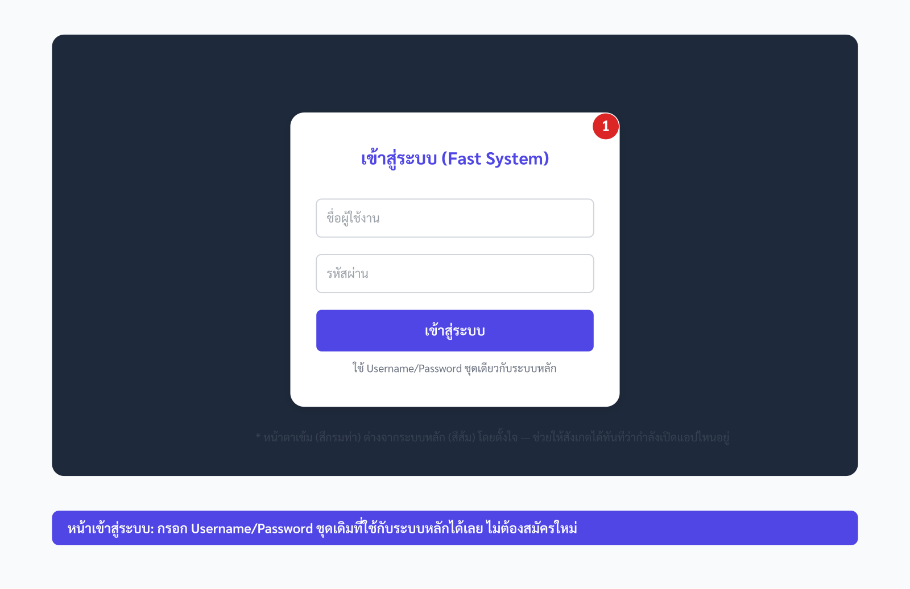
สังเกตว่าหน้าตาของ Fast Entry ใช้โทนสีกรมท่า/ม่วงคราม ต่างจากระบบหลักที่เป็นโทนสีส้ม — ออกแบบให้ต่างกันโดยตั้งใจ เพื่อให้สังเกตได้ทันทีว่ากำลังเปิดแอปไหนอยู่ เวลาสลับไปมาระหว่าง 2 แอป
แท็บหลักที่ใช้งานบ่อยที่สุด รวมฟอร์มบันทึกรายการและตารางประวัติไว้ในหน้าเดียว
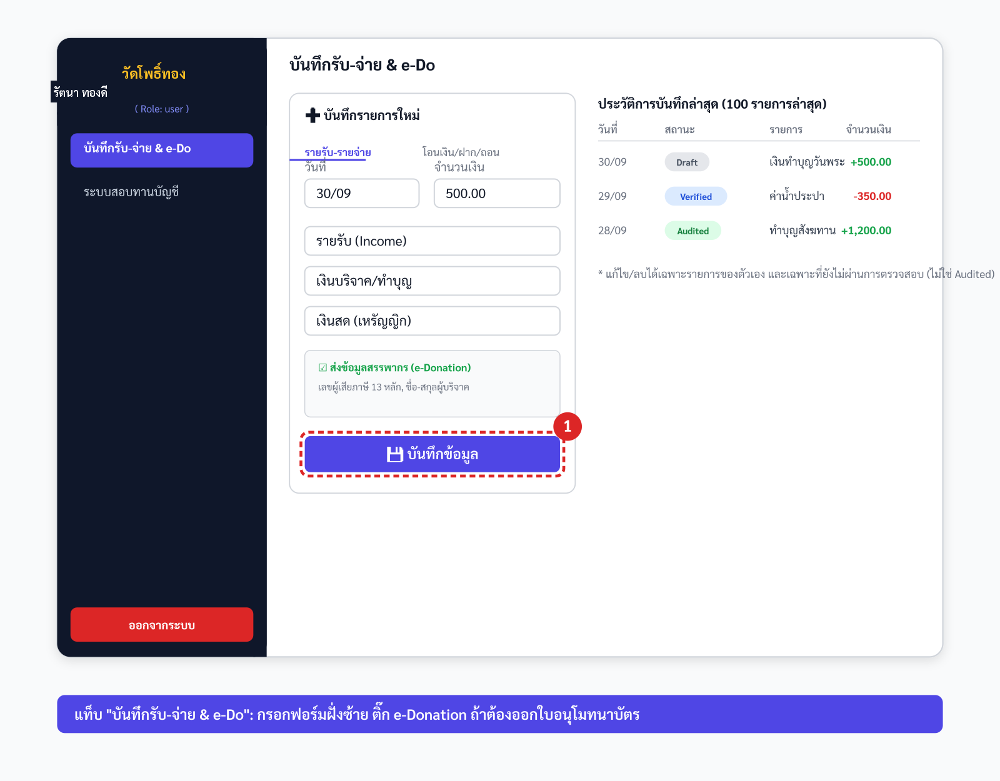
▸ วันที่ / จำนวนเงิน — ระบุวันที่เกิดรายการจริงและยอดเงิน
▸ ประเภท (รายรับ/รายจ่าย) — เลือกว่าเป็นเงินเข้าหรือเงินออก
▸ หมวดหมู่ / บัญชีรับ-จ่าย — เลือกจากรายการที่ตั้งค่าไว้แล้วในระบบหลัก (เมนู "ตั้งค่าระบบ") — Fast Entry ไม่มีหน้าเพิ่มหมวดหมู่หรือบัญชีใหม่ ต้องไปเพิ่มที่ระบบหลักก่อน
▸ ☑ ส่งข้อมูลสรรพากร (e-Donation) — ติ๊กเมื่อเป็นเงินบริจาคที่ต้องขออนุโมทนาบัตร (นำส่งข้อมูลเข้าระบบ e-Donation) ระบบจะเปิดช่องกรอกเลขผู้เสียภาษี 13 หลักและชื่อผู้บริจาคเพิ่มเติม
▸ ตารางประวัติการบันทึกล่าสุด — แสดง 100 รายการล่าสุด พร้อมสถานะ (Draft/Verified/Pending/Audited/Rejected) เหมือนระบบหลัก
รายการที่บันทึกโดย Admin จะมีสถานะ Verified ทันที ส่วนที่บันทึกโดย User ทั่วไปจะเป็น Draft ก่อน — ตรงกับ workflow ของระบบหลักทุกประการ
แก้ไข/ลบได้เฉพาะรายการของตนเอง และเฉพาะรายการที่ยังไม่ผ่านการตรวจสอบ (ไม่ใช่สถานะ Audited)
โหมด "โอนเงิน/ฝาก/ถอน" ใช้เมื่อย้ายเงินระหว่างบัญชีของวัดเอง เช่น นำเงินสดไปฝากธนาคาร
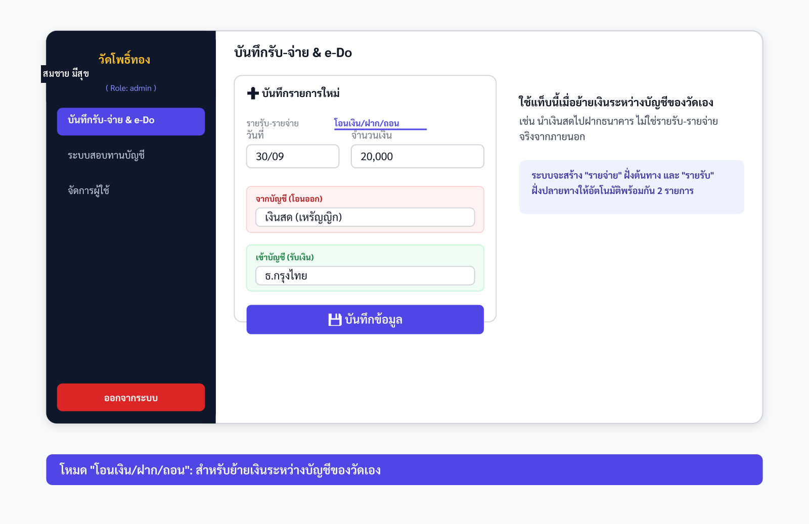
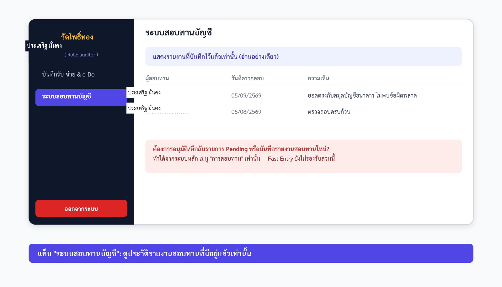
แท็บนี้แสดงประวัติรายงานสอบทานที่มีอยู่แล้วเท่านั้น เป็นโหมดอ่านอย่างเดียว (Read-only)
การอนุมัติ/ตีกลับรายการที่รอตรวจสอบ (สถานะ Pending) และการบันทึกรายงานผลการสอบทานฉบับใหม่ ยังไม่รองรับใน Fast Entry
ต้องทำผ่านระบบหลัก เมนู "การสอบทาน" เท่านั้น — ดูวิธีใช้ได้จากคู่มือการใช้งานระบบหลัก
เมนูนี้มองเห็นเฉพาะบัญชี Admin เท่านั้น
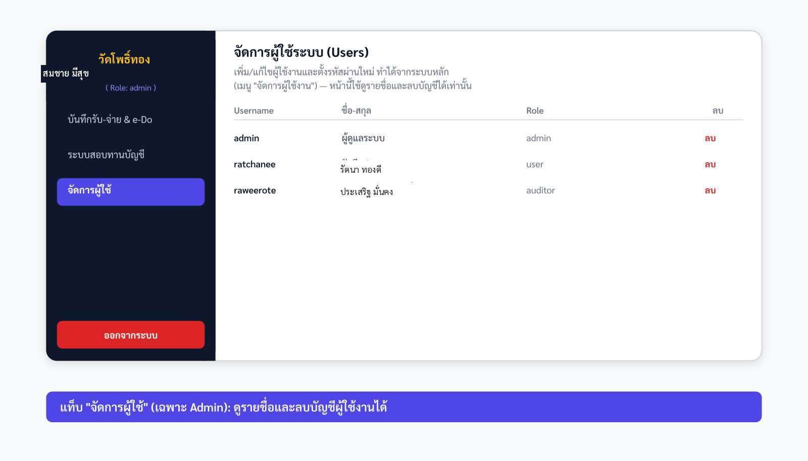
▸ ตารางรายชื่อผู้ใช้งาน — แสดง Username, ชื่อ-สกุล และสิทธิ์ (Role) ของทุกบัญชี
▸ ปุ่ม "ลบ" — ลบบัญชีผู้ใช้งานถาวร (บัญชี admin หลักลบไม่ได้ และลบบัญชีที่กำลังใช้งานอยู่ไม่ได้)
Fast Entry ยังไม่มีฟอร์มเพิ่มหรือแก้ไขผู้ใช้งาน (รวมถึงเปลี่ยนรหัสผ่าน) — ทำได้จากระบบหลัก เมนู "จัดการผู้ใช้งาน" เท่านั้น หน้านี้ใช้ดูรายชื่อและลบบัญชีได้เท่านั้น
ถาม: ทำไมเลือกหมวดหมู่หรือบัญชีในฟอร์มไม่ได้ (ช่องว่างเปล่า)?
ตอบ: หมวดหมู่และบัญชีธนาคารต้องตั้งค่าไว้ล่วงหน้าที่ระบบหลัก (เมนู "ตั้งค่าระบบ") ก่อน Fast Entry จึงจะดึงมาแสดงในฟอร์มได้
ถ้าเพิ่งเพิ่มหมวดหมู่ใหม่ในระบบหลัก ให้ลองออกจากระบบแล้วเข้าสู่ระบบใหม่ใน Fast Entry เพื่อโหลดข้อมูลล่าสุด
ถาม: ต้องการอนุมัติรายการที่รอตรวจสอบ (Pending) แต่ไม่เจอปุ่มใน Fast Entry?
ตอบ: Fast Entry ยังไม่รองรับการอนุมัติ/ตีกลับรายการ ต้องเปิดระบบหลัก เมนู "การสอบทาน" แทน
ถาม: เปลี่ยนรหัสผ่านหรือเพิ่มผู้ใช้งานใหม่จาก Fast Entry ได้ไหม?
ตอบ: ยังไม่ได้ในขณะนี้ ต้องทำผ่านระบบหลัก เมนู "จัดการผู้ใช้งาน" — Fast Entry ใช้ดูรายชื่อและลบบัญชีได้เท่านั้น
ถาม: ใช้ Fast Entry บันทึกรายการ แล้วเปิดระบบหลักจะเห็นรายการนั้นไหม?
ตอบ: เห็นทันที เพราะทั้งสองระบบอ่าน-เขียนชีตเดียวกัน ไม่มีความหน่วง